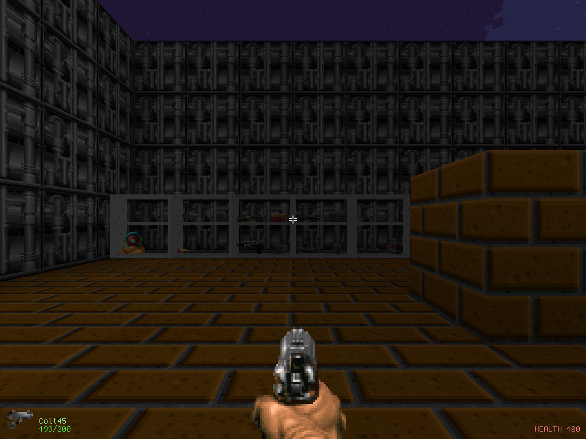
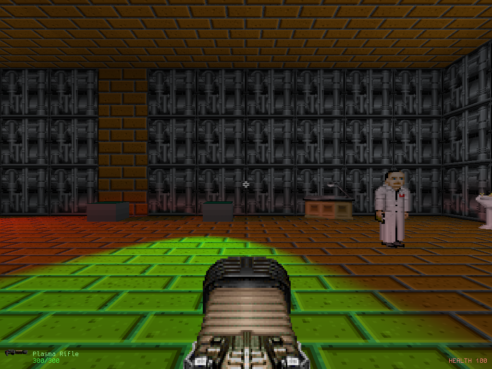

Janus Station
Completion ▰▰▱▱▱▱▱▱▱▱ 20% · strong engine, game barely begun
Janus Station is a first-person shooter set aboard a space station. It grew out of go-fps, my from-scratch first-person engine written in Go directly on top of OpenGL 3.3, and it isn't really a game yet. It boots aboard the Ark, a generation ship after a war, where you can walk around, shoot things and rebuild the level while it's running. The world is made of greedy-meshed voxel chunks, with sprites, glTF meshes, a skybox, fog, and spotlights that cast proper shadow-mapped shadows.
One of my favourite parts is the Doom asset import. The engine reads ZDoom-style weapon definitions, so about 155 classic sprite weapons load, animate and use up ammo. The old test map (raymap, still in the repo) has a range room where every one of them is lying on the floor with a box of ammo beside it. Around that there's collision, a bit of physics, projectiles, particles, doors, keypads, and pathfinding for actors walking their routes.
Press F5 and the whole game switches into an in-game editor with three modes: blocks, props and actors. There's per-face texture mapping and atlas pickers, and everything you build is saved back into the map file. Lately I've been building "the Ark", a generation ship after a war, and making the renderer fast enough to hold it. It now runs in the browser too: the engine compiled to WebAssembly, drawing through WebGL2, with the Ark and a handful of weapons packed in (no particles or music on the web yet).
Features
- Greedy-meshed voxel chunks with per-face textures, ambient occlusion and a per-level texture atlas
- Spotlights from a UBO with normal-offset shadow maps and hardware PCF, plus fog, skybox, bloom and a post-processing pass
- glTF/GLB meshes, sprite batches, particles, decals and placed scenery
- Quake-3-style player movement (strafe acceleration, jump), gravity, AABB/OBB/MPR collision and projectiles
- About 155 ZDoom weapons migrated offline into my own weapon format, with pickups, ammo and sounds
- Actors with paths and pathfinding (A*, JPS, Dijkstra) that notice and hunt you; you can die
- In-game editor on F5 (blocks, props, actors) that saves back into the map file
- The Ark, a generation-ship map, and a WebAssembly/WebGL2 build for the browser
Under the hood
Dying is deliberately cheap, from combat.go:
// die puts the player back at the level's own start with a full bar. There is
// no death screen and no save to reload - this is a game being built, and
// standing up where you came in is the shortest thing that lets the fight carry
// on being tested.The movement is a port of Quake 3's PM_WalkMove, strafe-jumping included (q3move.go):
// pmoveSingle is PM_WalkMove / PM_AirMove for one step. Friction only applies on
// the ground; in the air the acceleration is a tenth as strong but is still
// allowed to reach the full wish speed, which is what lets a strafing player
// gain speed beyond pmSpeed.There's a System Shock importer that reverse-engineers where the enemy sprites live, because the original data files don't say (tools/importss/critters.go):
// This is the one thing System Shock's data files do not write down. OBJPROP.DAT
// has a per-critter array of frame counts, and in the shipped file it is all
// zeroes - the engine fills it in from the art at load time.
...
// 1400 + 37*posture + critter,
// thirty-seven being the number of critters.The Doom weapon import is a two-phase whole-mod compiler into a weapon state graph, with eight ADRs in docs/adr/ explaining why (e.g. 0001-compiled-weapon-state-graph.md).
Ideas & inspirations
lore.md (in German) sets out the story: Earth wrecked by its elites, who leave on a generation ship with a hand-picked crew, "mit deutlichen Anleihen an System Shock und Prey (2017)". That's the Ark. The early optimize.txt has a todo list that reads like a shopping list for an immersive sim: decals, blood and gore particles, pickups, destructible bottles and barrels, water, dialog UI, container UI, "Actors & Paths & Dialogues", "Pickups & Inventory & Tools". The Doom side comes from ZDoom mods (Final Doomer and ten single-weapon community mods, per the commit log), the movement from Quake 3, and the enemy art importer from System Shock.
Where it started, where it ended
It began on 2025-03-17 with "first commit" and a pile of CI workflow commits ("workflow still", "next test"), then voxel editing, sprite batches, lighting and "pixel perfect shadow maps" by April 2025, and a "current state" commit in July 2025. design.txt from back then is just a few lines about texture atlases. After a 14-month gap it came back in September 2026 as a burst: weapons, physics, Doom migration, the editor building from nothing, the Ark, and finally the Janus Station rename and the browser build on 2026-10-01. An engine experiment became an engine with a setting and a map, but not yet the System Shock-like game the lore describes.
State of the repo
Last commit 2026-10-01; it builds and go vet is clean. ISSUES.md lists what's open: voxel textures still use texelFetch with no mips so distant walls shimmer, the forward renderer loops over every light, ZScript isn't read at all, ACS scripts, screen shake and sound attenuation are compiled but not wired, and muzzle flash and projectiles share one light slot. There are 54 ponytail: comments marking deliberate shortcuts. Nothing from the lore (factions, story, dialog, inventory beyond weapons) is built yet. Against the goal of a story-driven station shooter I'd say it's about 20% there: the engine is far along, the game is not.
Is it a real game?
Sandbox. You can walk the Ark, pick up weapons, shoot enemies who hunt you, and die, which just drops you back at the spawn with a "You died" toast. There's no objective, no win state, no ending and no save. It runs out once you've tried the guns and poked at the editor, maybe half an hour if you like Doom weapons.
Screenshots



Latest updates
- 2026-09-13 Camera drawn between physics steps, draw time on the overlay
- 2026-09-13 The Ark furnished and lived in, and a renderer fast enough to hold it
- 2026-09-12 Orientation-aware movement: roll input, gravity-free up, doors follow it
- 2026-09-11 Signs on the Ark's walls, a tumbling sky and a leak check
- 2026-09-11 The Ark, a generation ship after the war, and the tools to script it
- 2026-09-11 AO strength slider in the rendering menu